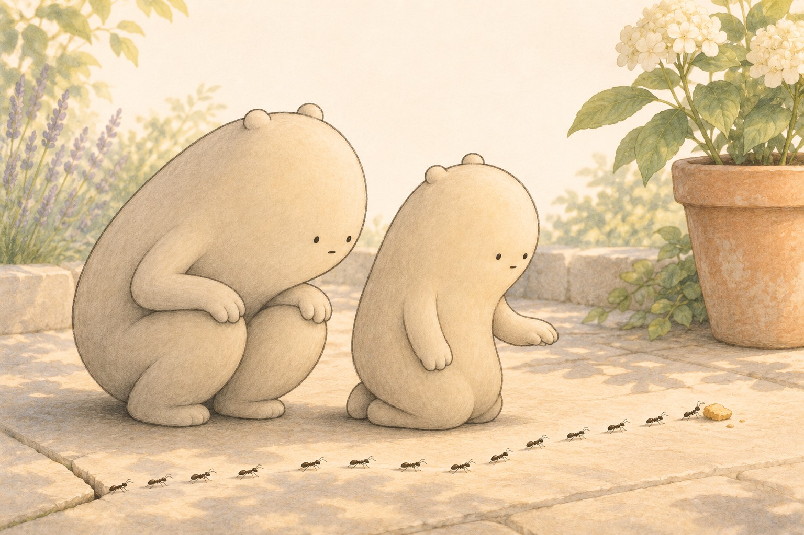
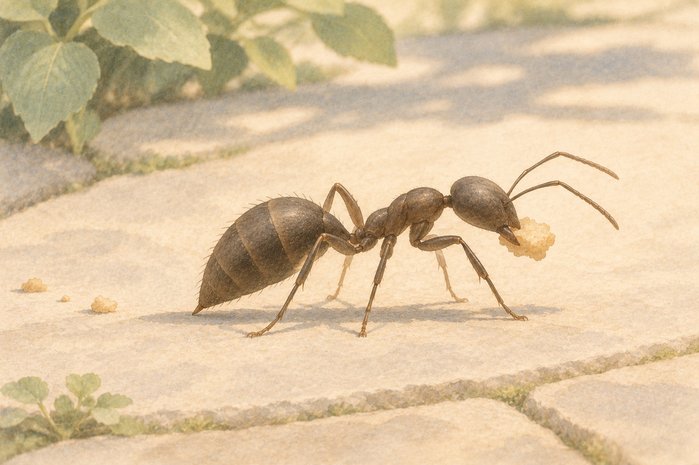
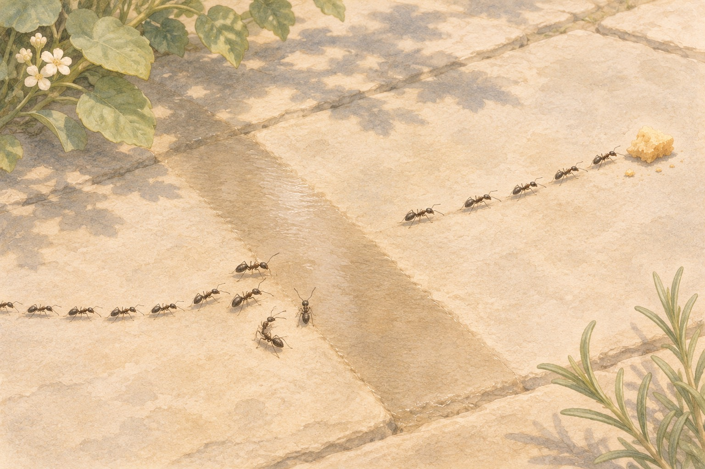
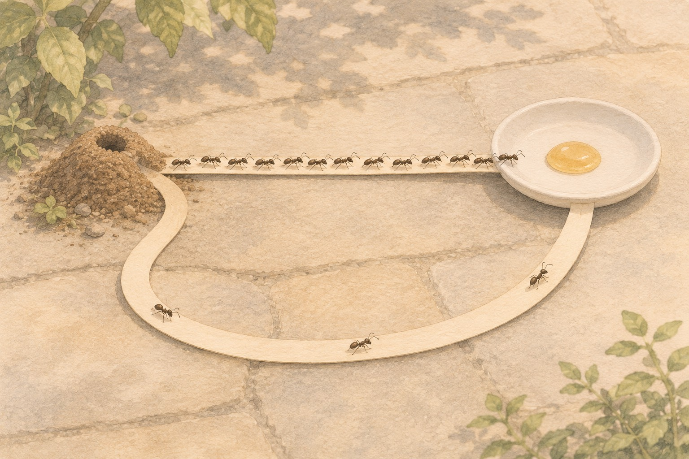
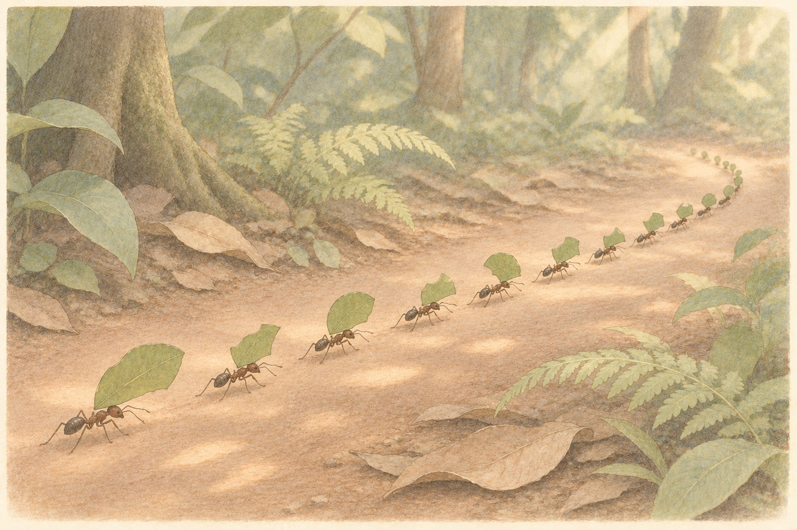
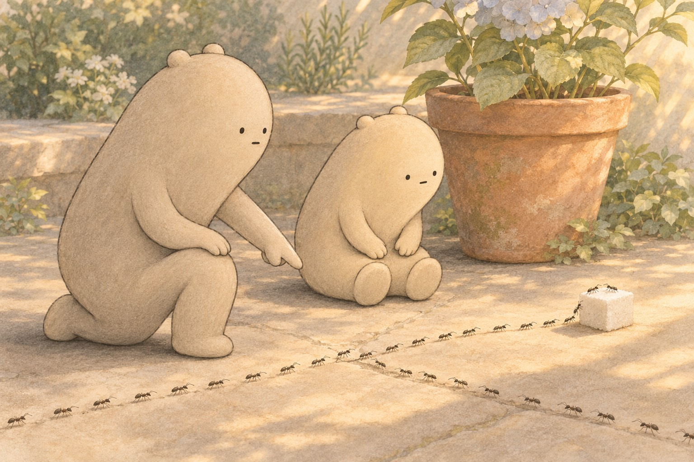

How does every ant in a line know the way to the food?

Where shall we look?

The scout carries a crumb home and dabs scent on the stone.
How does the first ant mark the way?
Find the crumb in the ant's jaws and the tip of its body touching the paper.
A little explanation & something to try
The first ant to find food is a scout. On her way home, she dabs the tip of her body on the ground again and again. Each dab leaves a little scent called a pheromone. Ants smell with their two antennae, so the others can follow her invisible road straight to the food.
Try this. Put one crumb near some ants outside. Watch for the first ant to find it. Does she eat it there, or carry it home?

Wipe one stripe, and the ants stop and search in loops.
What happens if you wipe the trail?
Find the shiny wiped stripe and the ants turning in small loops at its edge.
A little explanation & something to try
The ants stop! Wiping removes the scent, so the road is gone right there. The ants wave their antennae and wander in loops, searching. Soon one ant finds the scent on the far side, crosses, and leaves new scent behind her. The line joins up again.
Try this. Find a busy ant trail on a path. Wipe a damp cloth across one spot, then step back. How long until the ants cross again?

The short bridge fills with ants. The long one is nearly empty.
Why do ants pick the shortest road?
Compare the crowded short bridge with the long bridge that has only a few ants.
A little explanation & something to try
Nobody measures. Ants on the short bridge get back sooner, so they add scent to it more often. More scent pulls in more ants, and they add even more. The scent on the long bridge slowly fades away. Soon almost every ant uses the short road. Scientists tried this with real bridges.
Try this. Put two crumbs outside, one near the ants and one far away. Which crumb gets a busy trail first?

Leafcutter ants sweep their trails into little roads.
How big can an ant trail get?
Find the bare, swept path and the leaf pieces held up like little sails.
A little explanation & something to try
Leafcutter ants clear their trails of twigs and leaves, so they become real little roads. Thousands of ants carry leaf bits home to feed a fungus garden. Sometimes army ants get lost following a trail that loops in a circle, and march round and round. People call that an ant mill.
Try this. Draw an ant trail from your door to a crumb. Then draw a shorter road. Which one would the ants pick, and why?
Ant trail counts
Compare and round counts of ants, crumbs and bridge crossings.
The short bridge fills with ants. The long one is nearly empty.
Choose one problem and draw the tens as sticks and the ones as dots to check.
1.Little Wonderer counts 61 ants on the patio trail and 16 ants near the flower pot. Put >, <, or = in the circle. What is the greater count (or the shared count if equal)?
61 ○ 16
A small hint
Compare tens first, then ones. When both counts match, use = and give that shared count.
2.In a count, the nest gets 29 crumbs in the morning and 92 crumbs in the afternoon. Put >, <, or = in the circle. What is the greater count (or the shared count if equal)?
29 ○ 92
A small hint
Compare tens first, then ones. When both counts match, use = and give that shared count.
3.The big one counts 67 ants waiting at the wiped stripe. What is 67 rounded to the nearest ten?
67 → nearest ten: ___
A small hint
Look at the ones. With 5 or more, go up to the next ten; otherwise go down.
4.In a count, 58 ants cross the short bridge in one minute, and 58 cross it the next minute. Put >, <, or = in the circle. What is the greater count (or the shared count if equal)?
58 ○ 58
A small hint
Compare tens first, then ones. When both counts match, use = and give that shared count.
5.The little one watches 34 ants march to the sugar cube. What is 34 rounded to the nearest ten?
34 → nearest ten: ___
A small hint
Look at the ones. With 5 or more, go up to the next ten; otherwise go down.
6.In a count, 85 leafcutter ants carry leaves past one fern. What is 85 rounded to the nearest ten?
85 → nearest ten: ___
A small hint
Look at the ones. With 5 or more, go up to the next ten; otherwise go down.
The road nobody painted
How an Ant Trail Works
A line of ants
Little Wonderer kneels on the warm patio. A thin line of ants runs from a crack to a cookie crumb. Every ant walks the same curvy path, one behind another. Big Wonderer crouches to watch. Nobody painted a road on the stone. So how does every ant know the way?
Where does the line of ants start and end?
The scout's scent
One ant found the crumb first. She is called a scout. On her way home, she dabbed the tip of her body on the stone again and again. Each dab left a tiny bit of scent called a pheromone. The other ants smell it with their two antennae, and they follow it.
What does the scout leave on the stone?
Wipe the trail
Here is a test. Wipe a damp cloth across one spot on the trail. The ants reach the wiped stripe and stop! They wave their antennae and wander in little loops. The scent road is broken there. Soon one ant crosses and leaves fresh scent, and the line joins up again.
What do the ants do at the wiped stripe?
The short road wins
Here is a clue. Scientists once gave ants two bridges to some honey, one short and one long. At first, ants used both. But ants on the short bridge got back sooner, so they added scent there more often. That trail grew stronger and pulled in more ants. Meanwhile, the scent on the long bridge faded away.
Why did the short bridge get more scent?

A brand-new trail
Later, the little one sets a sugar cube near the line. Before long, a new line of ants branches off toward it. Now the guess changes. No ant is the leader. Each ant simply follows the strongest scent and adds a little more. Many tiny dabs build one road, and old roads fade when the food runs out.
Who is the leader of the ant trail?
Ant highways
Here is a surprise. In the rainforest, leafcutter ants sweep their trails clear, so the trails become real little roads. Thousands of ants carry leaf pieces home along them. Army ants can even get stuck on a trail that loops in a circle, marching round and round. Computers now copy ants to find short routes. What trail would you design?